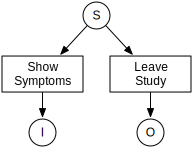
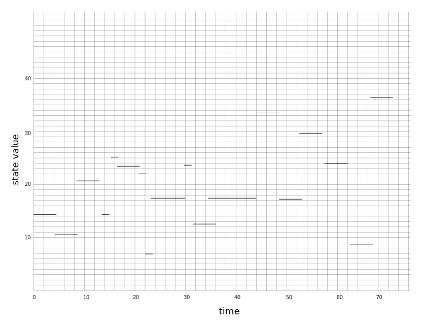

Markov Processes
This addresses two main points, how to specify a model for the library using distributions defined by hazards and why such a specification, with its initial conditions, is sufficient to define the trajectory for a model.
The Hazard from Survival Analysis
Discrete case
The discrete case is much easier to understand than the continuous case because it can be explained without employing any results from calculus. Throughout this section, $\bf{X}$ will be assumed to real-valued random variable. For example, $\bf{X}$ could represent latent periods for measles.
It frequently happens that random samples of the real valued variables such as $\bf{X}$ are actually analyzed on a discrete scale. For example Stocks' data on latent periods of measles in latent_period is based on daily visits by patients [Stocks:1931].
The (cumulative) distribution of $\bf{X}$ is defined as
\[F_{X}(k) = \mathcal{P}[x \le k]\]
assuming $F_{X}(\infty) = 1$. The density can be expressed as the difference in adjacent values of the distribution
\[\begin{aligned} f_{X}(k) & = \mathcal{P}[X=k] \\ & = \mathcal{P}[X\le k] - \mathcal{P}[X \le k-1 ] \\ & = F_{X}(k) - F_{X}(k-1) \end{aligned}\]
For Stocks' data in latent_period, the density at day $k$ should be interpreted as the probability of the appearance of symptoms since the previous visit on day $k-1$.
The hazard is defined as the conditional probability that the value of a random selection from $\bf{X}$ equals $k$ given it this value is already known to exceed $k-1$. Using the usual rules for computing conditional probabilities, the hazard is given by the following ratio
\[\begin{aligned} h_{X}(k) & = \mathcal{P}[X=k\; |\; k-1<X] \\ & = {\frac{f_{X}(k)}{1 - F_{X}(k-1)}} \end{aligned}\]
In the case of Stocks' data, the hazards shown in latent_period_hazard would correspond to the probability of symptoms appearing at day $k$ given that the patient had not displayed symptoms at any previous visit. As time goes on, patients who have already developed symptoms effectively reduce the pool of patients in the study who are still in a state where they might first present symptoms on day $k$. This is the origin of the term in the denominator.

On any given day, the hazard for latent periods can be interpreted as the rate of appearance of symptoms per asymptomatic (infected but not yet symptomatic) patient per day. For example, the hazard inferred from the Weibull distribution is approximately $0.15$ on day 10. In other words, 15% of the patients that are asymptomatic on day 9 will present symptoms when examined on day 10.

This interpretation is extremely important because it connects a hazard with a rate for a specific process, and that rate has well defined units of measurement. In addition, it clarifies how rate parameters should be estimated from observational data. Failure to account for the shrinking pool over time is commonplace. In this case it would lead to a systematic errors in the estimation of process rates, especially at long times when the depletion effect is most pronounced.
Continuous case
The random variable $\bf{X}$ is again assumed to be a real-valued, but the measurements will not be binned as above. The cumulative distribution not an integer $k$ but a continuous time interval, $\tau$.
\[F_X(\tau)=P[x\le\tau]\]
assuming $F_X(\infty)=1$. The density is the derivative of the cumulative distribution. The concept of the hazard is part of survival analysis, where survival is $G_X(\tau)=1-F_X(\tau)$, and represents the probability the random variable, a time interval, is longer than $\tau$. One expression for the hazard is that the density of the random variable is equal to the probability it survives to a time $\tau$ multiplied by the hazard rate for firing at time $\tau$, or, in probabilities,
\[P[\tau<x\le\tau+d\tau]d\tau=P[\tau<x]P[\tau<x\le\tau+d\tau+d\tau|\tau<x].\]
Writing this same equation with its almost-sure equivalents defines the continuous hazard, $\lambda_X(\tau)$,
\[f_X(\tau)=G_X(\tau)\lambda_X(\tau).\]
This is a rearrangement away from the definition of the discrete case.
Finite State Machines Generate Trajectories
This library accepts a specification of a model in terms of hazards, an initial condition, and produces trajectories. This set of high-level steps to simulation (specify, initialize, step) has a well-defined abstraction called a finite state machine. It isn't the finite state machine familiar to programmers but a mathematical model, coming from category theory, for a particularly simple class of computing systems. At a conceptual level, a finite state machine can be considered a black box that receives a sequence of input signal and produces an output signal for each input signal. Internally, the black box maintains a state -- some sort of finite summary representation of the sequence of input signals encountered so far. For each input signal, the box performs two operations. In both cases, the decision depends on the current internal state and the identity of the input signal just received.
- Chose next state
- Generate output token
It is helpful to view the finite state machine layer as a mechanism to simulate a Markov chain or Markov process.
Markov Chain for Discrete-Time Trajectories
Roughly speaking, a Markov chain, $\bf{X}$, is a probabilistic system that makes random jumps among a finite set of distinct states, $s_0, s_1, s_2, \ldots, s_N$ such that the probability of choosing the next state, $X_{n+1}$ depends only on the current state, $X_n$. In mathematical terms, the conditional probabilities for state transitions must satisfy
\[\mathcal{P}[X_{n+1} = s_{l} | X_0=s_i, X_1=s_j, \ldots, X_n=s_k] = \mathcal{P}[X_{n+1} = s_{l} | X_{n}=s_k]\]
Since more distant history does not affect future behavior, Markov chains are sometimes characterized as memoryless.
This relation can be iterated to compute the conditional probabilities for multiple time steps
\[\mathcal{P}[X_{n+2} = s_{m} | X_n=s_k] = \sum_{l} \mathcal{P}[X_{n+2} = s_{m} | X_{n+1}=s_l] \mathcal{P}[X_{n+1} = s_{l} | X_{n}=s_k]\]
Note, the transition probabilities $\mathcal{P}[X_{n+1} = s_{l} | X_{n}=s_k]$ may depend on time (through the index $n$). These so-called time-inhomogeneous Markov chains arise when the system of interest is driven by external entities. Chains with time-independent conditional transition probabilities are called time-homogeneous. The dynamics of a time-homogeneous Markov chain is completely determined by the initial state and the transition probabilities. All processes considered in this document are time-homogeneous.
Markov Process for Continuous-Time Trajectories
A Markov process is a generalization of the Markov chain such that time is viewed as continuous rather than discrete. As a result, it makes sense to record the times at which the transitions occur as part of the process itself.
The first step in this generalization is to define a stochastic process $\bf{Y}$ that includes the transition times as well as the state, $Y_{n} = (s_{j},t_{n})$.
The second step is to treat time on a truly continuous basis by defining a new stochastic process, $\bf{Z}$, from $\bf{Y}$ by the rule $Z_{t} = s_k$ in the time interval $t_n \le t < t_{n+1}$ given $Y_{n} = (s_k, t_n)$ . In other words, $\bf{Z}_{t}$ is a piecewise constant version of $\bf{Y}$ as shown in piecewise_Z.

A realization of the process $\bf{Y}$ is defined by the closed diamonds (left end points) alone. Similarly, a realization of the process $\bf{Z}_t$ is illustrated by the closed diamonds and line segments. The closed and open diamonds at the ends of the line segment indicate that the segments include the left but not the right end points.
The memoryless property for Markov processes is considerably more delicate than in the case of Markov chain because the time variable is continuous rather than discrete. In the case of $\bf{Y}$, the conditional probabilities for state transitions of must satisfy
\[\mathcal{P}[Y_{n+1} = (s_{l},t_{n+1}) | Y_0=(s_i, t_0), Y_1=(s_j, t_1), \ldots, Y_n=(s_k, t_n)] = \mathcal{P}[Y_{n+1} = (s_{l}, t_{n+1}) | Y_{n}=(s_k, t_{n})]\]
The proper generalization of the requirement of time-homeogeneity stated previously for Markov chains is that joint probability be unchanged by uniform shifts in time
\[\mathcal{P}[Z_{t+\tau} | Z_{s+\tau}] = \mathcal{P}[Z_{t} | Z_{s} ]\]
for $0<s<t$ and $\tau > 0$. Stochastic processes with shift invariant state transition probabilities are called stationary.
When we examined hazard rates above, we were examining the rate of transitions for a Markov process. The overall probability of the next state of the Markov process is called the core matrix,
\[\mathcal{P}[Z_{t} | Z_{s} ]=Q_{ij}(t_{n+1}-t_n)\]
indicating a state change between the states $(s_i,s_j)$. The derivative of this is a rate,
\[q_{ij}(t_{n+1}-t_n)=\frac{dQ_{ij}(t_{n+1}-t_n)}{dt},\]
which is a joint distribution over states and time intervals. Normalization for this quantity sums over possible states and future times,
\[1=\int_0^\infty \sum_j q_{ij}(s)ds.\]
The survival, in terms of the core matrix, is
\[G_i(\tau)=1-\int_0^\tau \sum_k q_{ik}(s)ds.\]
This means our hazard is
\[\lambda_{ij}(\tau)=\frac{q_{ij}(\tau)}{1-\int_0^\tau \sum_k q_{ik}(s)ds}.\]
For the measles example, the set of future states $j$ of each individual include symptomatic and all the possible other ways an individual leaves the study, so you can think of $j=\mbox{left town}$. In practice, we build a hazard in two steps. First, count the probability over all time for any one eventual state $j$. This is the same stochastic probability $\pi_{ij}$ that is seen in Markov chains. Second, measure the distribution of times at which intervals enter each new state $j$, given that they are headed to that state. This is called the holding time, $h_{ij}(\tau)$, and is a conditional probability. Together, these two give us the core matrix,
\[q_{ij}(\tau)=\pi_{ij}h_{ij}(\tau).\]
Note that $h_{ij}(\tau)$ is a density whose integral $H_{ij}(\tau)$ is a cumulative distribution. If we write the same equation in terms of probabilities, we see that it amounts to separating the Markov process into a marginal and conditional distribution.
\[\begin{aligned} q_{ij}(\tau)&=\frac{d}{d\tau}P[Z_t|Z_s] \\ &=\frac{d}{d\tau}P[s_j|s_i,t_n]P[t_{n-1}-t_n\le\tau|s_i,s_j,t_n] \\ & = P[s_j|s_i,t_n]\frac{d}{d\tau}P[t_{n-1}-t_n\le\tau|s_i,s_j,t_n] \\ & = \pi_{ij}\frac{d}{d\tau}H_{ij}(\tau) \\ & = \pi_{ij}h_{ij}(\tau) \end{aligned}\]
Choosing the other option for the marginal gives us the waiting time formulation for the core matrix. It corresponds to asking first what is the distribution of times at which the next event happens, no matter which event, and then asking which events are more likely given the time of the event.
\[\begin{aligned} q_{ij}(\tau)&=\frac{d}{d\tau}P[Z_t|Z_s] \\ &=\frac{d}{d\tau}P[s_j|s_i,t_n,t_{n+1}]P[t_{n-1}-t_n\le\tau|s_i,t_n] \\ & = \frac{d}{d\tau}(\Pi_{ij}(\tau)W_i(\tau)) \\ & = \pi_{ij}(\tau)\frac{d}{d\tau}W_i(\tau) \\ & = \pi_{ij}(\tau)w_{i}(\tau) \end{aligned}\]
While the waiting time density $w_i(\tau)$, is the derivative of the waiting time, we won't end up needing to relation $\pi_{ij}(\tau)$ to $\Pi_{ij}(\tau)$ when finding trajectories or computing hazards, so the more complicated relationship won't be a problem.
References
[Stocks:1931] P. Stocks, “Incubation period of measles,” British Medical Journal 1(3655): p. 157.
Acknowledgement
This section comes was created by the Analytical Framework for Infectious Disease Dynamics (AFIDD) group at Cornell University in conjunction with the USDA Agricultural Research Service. This work was supported by the Science & Technology Directorate, Department of Homeland Security via interagency agreement no. HSHQDC-10-X-00138.